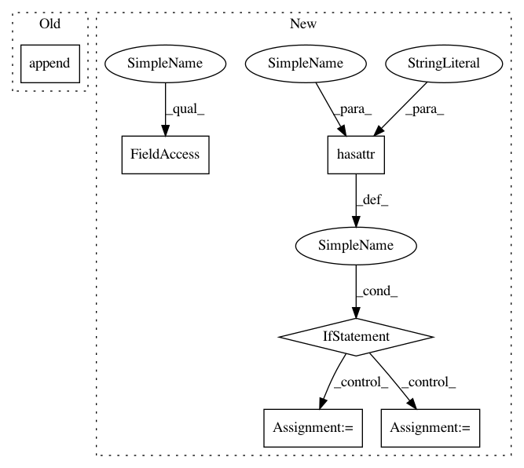

bc779df8b7b0745eedaaaca281728bbcea118e08,keras/backend/tensorflow_backend.py,,batch_set_value,#Any#,893
Before Change
value = np.asarray(value)
tf_dtype = _convert_string_dtype(x.dtype.name.split("_")[0])
assign_placeholder = tf.placeholder(tf_dtype, shape=value.shape)
assign_ops.append(x.assign(assign_placeholder))
feed_dict[assign_placeholder] = value
get_session().run(assign_ops, feed_dict=feed_dict)
After Change
for x, value in tuples:
value = np.asarray(value)
tf_dtype = _convert_string_dtype(x.dtype.name.split("_")[0])
if hasattr(x, "_assign_placeholder"):
assign_placeholder = x._assign_placeholder
assign_op = x._assign_op
else:
assign_placeholder = tf.placeholder(tf_dtype, shape=value.shape)
assign_op = x.assign(assign_placeholder)
x._assign_placeholder = assign_placeholder
x._assign_op = assign_op
assign_ops.append(assign_op)
feed_dict[assign_placeholder] = value
get_session().run(assign_ops, feed_dict=feed_dict)
In pattern: SUPERPATTERN
Frequency: 3
Non-data size: 6
Instances
Project Name: keras-team/keras
Commit Name: bc779df8b7b0745eedaaaca281728bbcea118e08
Time: 2016-08-08
Author: francois.chollet@gmail.com
File Name: keras/backend/tensorflow_backend.py
Class Name:
Method Name: batch_set_value
Project Name: facebookresearch/fastMRI
Commit Name: 40c5039380d45c96ddbd3fd951e5c9adf167647d
Time: 2020-10-21
Author: matt.muckley@gmail.com
File Name: fastmri/pl_modules/mri_module.py
Class Name: MriModule
Method Name: test_epoch_end
Project Name: tensorflow/tensorboard
Commit Name: 5f7331f1f0d9acb4bded8198a4850ede0c9bb861
Time: 2018-05-23
Author: cais@google.com
File Name: tensorboard/plugins/debugger/tensor_store.py
Class Name: _WatchStore
Method Name: query
Project Name: keras-team/keras
Commit Name: bc779df8b7b0745eedaaaca281728bbcea118e08
Time: 2016-08-08
Author: francois.chollet@gmail.com
File Name: keras/backend/tensorflow_backend.py
Class Name:
Method Name: batch_set_value